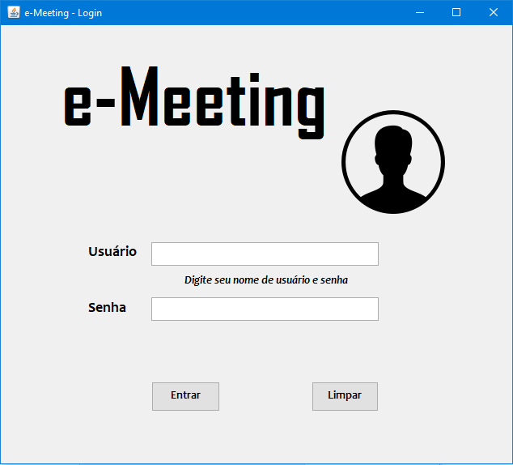
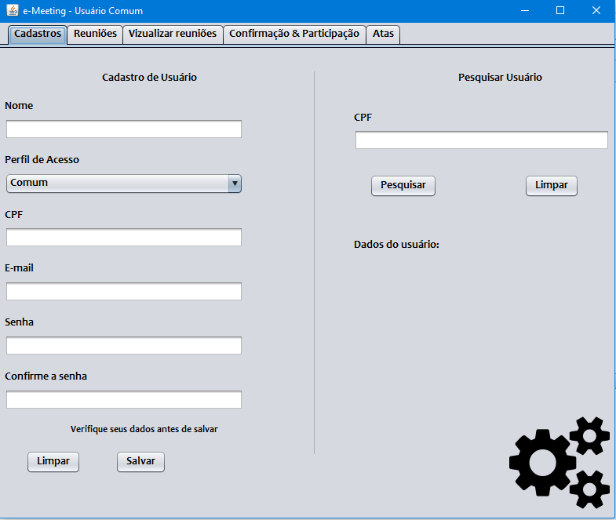
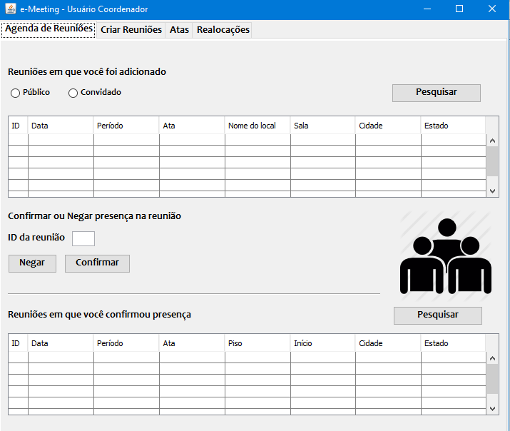
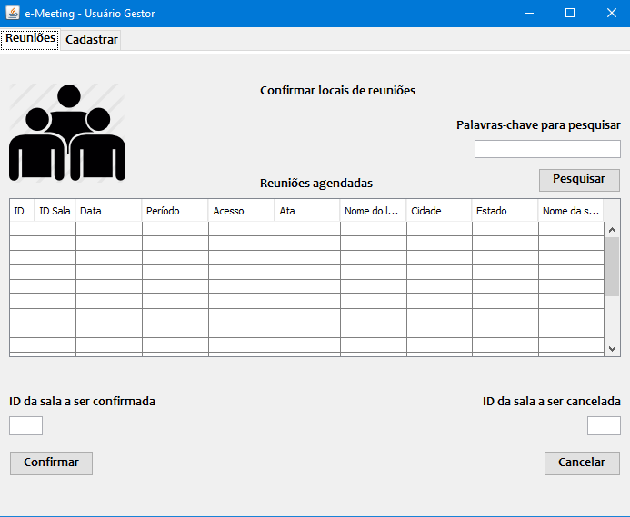

E-meeting
Descrição do projeto
Sistema de Gerenciamento de Reuniões
A aplicação e-Meeting gerenciará salas, participantes, pautas e atas para que a equipe só se preocupe com o que importa: os assuntos da reunião. As principais funcionalidades são: Agendamento de reuniões, Registro das informações das reuniões e Acesso às informações de reuniões anteriores.
Usuário Comum
- Cadastrar no Sistema
- Logar no Sistema;
- Confirmar ou Negar presença em uma reunião;
- Visualizar as reuniões em que foi confirmada sua presença;
- Visualizar atas de reuniões;
- Criar uma reunião;
- Adicionar participantes;
- Redigir Ata de reuniões do qual é o proprietário;
- Editar atas de reuniões do qual é o proprietário;
- Sugerir local da reunião;
- Baixar atas de reuniões que participou.

Coordenador
- Logar no Sistema;
- Visualizar as reuniões em que foi confirmada sua presença;
- Confirmar ou Negar presença em uma reunião;
- Criar reuniões;
- Editar todas as atas;
- Realocar Reuniões de sala;
- Adicionar participantes na lista de reuniões.

Gestor de Recursos
- Logar no Sistema;
- Confirmar local de reuniões;
- Cadastrar novos espaços de reunião.
Voltar ao topo